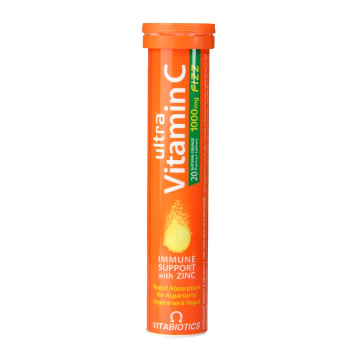

£4.99
Ultra Vitamin C Fizz was made to provide a reliable source of vitamin C for people who want to maintain their vitamin C intake up to a health level as well as support their immune system. These tablets suitable for both vegetarians and vegans and they have a natural orange flavour. Vitabiotics' Ultra Vitamin C & Zinc fizzy Tablets are a refreshing alternative to traditional tablets or capsules. Vitamin C and zinc are essential for maintaining overall health and wellbeing, and both contribute to the normal functioning of the immune system. Additionally, this vitamin C tabelet can help sustain normal immune system function during and after intense physical exercise.